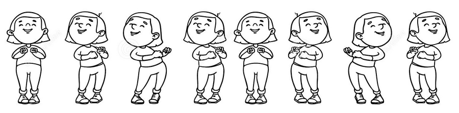
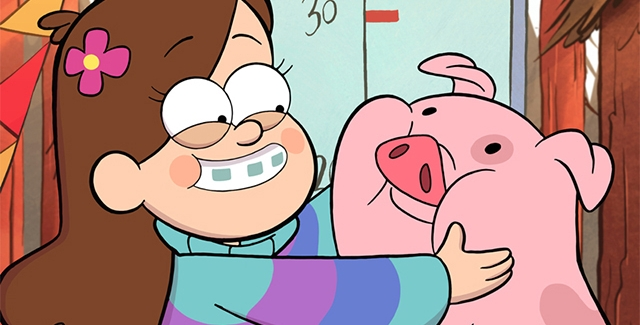
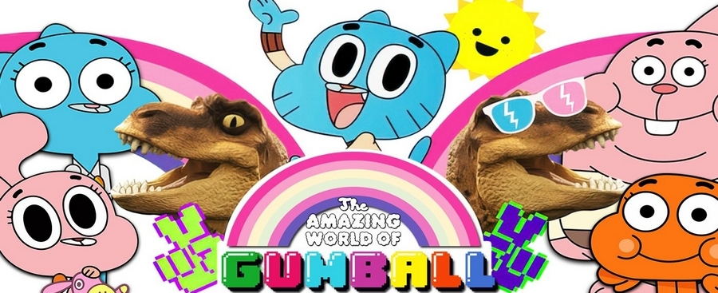
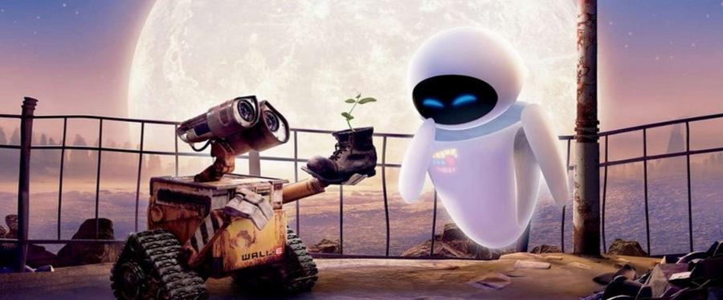
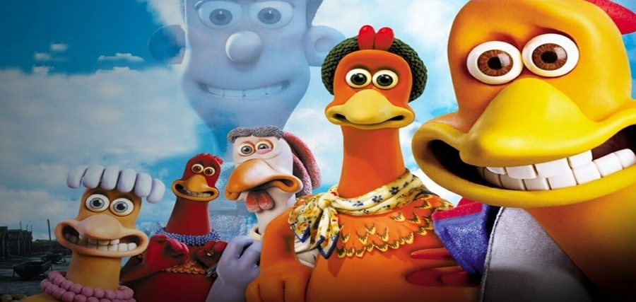

A animação digital é mais um mundo à parte e possui toda sua teoria e conceitos, pode ou não estar vinculada à Pintura Digital.
Uma animação consiste em um conjunto de pinturas ou imagens que são exibidas rapidamente uma após a outra dando a sensação de movimento. Cada imagem é chamada de quadro, a qualidade da animação dependerá da quantidade de quadros por segundo ou FPS (Frames per Second). Sendo normalmente utilizados entre 12 e 30 quadros por segundo. Nesta base, uma animação de 24 quadros por segundo com duração de 10 minutos teria mais de 14 mil quadros.
Existem basicamente quatro tipos de animação:
A animação quadro-a-quadro ou frame-by-frame, chamada ainda de Animação Tradicional é a técnica de animação mais utilizada no mundo inteiro e consiste em desenhar cada quadro separadamente, com pequenas alterações em relação ao quadro anterior. Apesar de ser a mais trabalhosa, é a técnica que garante mais perfeição e beleza à animação. Alguns exemplos famosos de animação quadro a quadro são As Aventuras de Jackie Chan e Gravity Falls – Um Verão de Mistérios.
Gravity Falls - Um verão de mistérios:
Animação de Recorte ou Animação Cut-Out é uma técnica que simplifica a forma de trabalhar a animação criando formas vetoriais que podem ser editadas fazendo com que a edição provoque a transição entre os quadros, por exemplo criando um círculo de 15x15 no quadro 0 e aumentando seu tamanho no quadro 100 para 30x30 ao pressionar o play ele é animado automaticamente aumentando de tamanho. Um exemplo de animação Cut-Out famoso é O Incrível Mundo de Gumball.
O Incrível Mundo de Gumball:
A animação 3D possui muitos elementos de edição de bitmaps pois o 3D só se torna animação a partir do momento em que as imagens são renderizadas para serem posteriormente processadas, no entanto foge um pouco do escopo deste assunto. A animação em 3D tomou o espaço da animação tradicional pouco a pouco e sua qualidade depende unicamente do poder de processamento das máquinas envolvidas, algumas vezes necessitando de dezenas de computadores, deixando este trabalho apenas para grandes estúdios.
Wall-E:
A animação Stop-Motion é criada seguindo os mesmos princípios da animação Quadro-a-Quadro com a única diferença de que os quadros não são desenhados à mão ou criados no computador, mas obtidos a partir de fotografias de um cenário físico real que é alterado milimetricamente a cada foto, o exemplo mais famoso de animação stop-motion é o de massa de modelar conhecido como Animação em Massinha, ou Desenho Animado em Massinha, no entanto os cenários e personagens podem ser produzidos com qualquer material sendo muito popular atualmente o Lego.
A Fuga das Galinhas:
